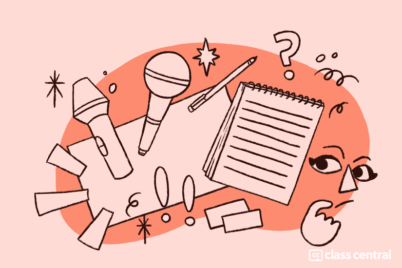

[2023] अपने कौशल में सुधार के लिए 170 नि: शुल्क ऑनलाइन लेखन पाठ्यक्रम
सभी प्रकार के लेखकों और इच्छुक लेखकों के लिए अपने लेखन कौशल में सुधार करने के लिए विभिन्न प्रकार के मुफ्त ऑनलाइन पाठ्यक्रम उपलब्ध हैं।
एक बेहतर लेखक बनने से आपको पेशेवर और व्यक्तिगत लक्ष्यों को प्राप्त करने में मदद मिल सकती है। चाहे आप विश्वविद्यालय के अध्ययन की तैयारी कर रहे हों, रिज्यूमे और कवर पत्रों का मसौदा तैयार कर रहे हों, बिक्री की प्रतिलिपि लिख रहे हों, या अपनी यादों को संरक्षित करने की कोशिश कर रहे हों, आपको लेखन के माध्यम से संवाद करने में सक्षम होना चाहिए। सौभाग्य से, आपकी लेखन यात्रा में मार्गदर्शन करने के लिए मुफ्त लेखन पाठ्यक्रम प्रचुर मात्रा में हैं।
कथा लिखना शुरू करना चाहते हैं? इसके लिए एक कोर्स है, वास्तव में कई। मुफ्त लेखन ऑनलाइन पाठ्यक्रम भी हैं जो आपको बेहतर व्यावसायिक ईमेल लिखने, सम्मोहक ऑनलाइन पोस्ट और सोशल मीडिया अपडेट बनाने और तकनीकी रिपोर्ट तैयार करने के लिए सिखाएंगे। अंग्रेजी भाषा सीखने वालों, शिक्षकों और व्याकरण के छात्रों को भी इस सूची में कुछ पाठ्यक्रम मिलेंगे। संक्षेप में, जो कुछ भी आप लिख रहे हैं, संभावना है कि आप नीचे दिए गए पाठ्यक्रमों में से एक या अधिक के साथ अपने शिल्प में सुधार कर सकते हैं।
और अधिक संसाधनों के लिए, एक नज़र डालें सैकड़ों पाठ्यक्रमों और साइटों के साथ दूसरी भाषा (ईएसएल) के रूप में अंग्रेजी सीखें.
त्वरित नोट: जबकि इनमें से कई पाठ्यक्रम शुल्क के साथ आते हैं, इस लेख में सभी विशेष रूप से चित्रित पाठ्यक्रम पूर्ण या आंशिक रूप से ऑडिट करने के लिए उपलब्ध हैं। यदि आप एक बेहतर लेखक बनने में मदद करने के लिए भुगतान किए गए पाठ्यक्रमों का पता लगाना चाहते हैं, तो बस अपनी रुचि के विषय को टाइप करें ढूँढ हमारा फ़ील्ड या ब्राउज़ करें मानविकी विषय.
अधिक पाठ्यक्रमों के लिए, ब्राउज़ करें Class Central की कैटलॉग 100,<> से अधिक ऑनलाइन पाठ्यक्रम या हमारे सभी खोजें नि: शुल्क प्रमाणपत्र लेख यहाँ. या लेखन के लिए हमारे सर्वश्रेष्ठ पाठ्यक्रम गाइड पर जाएं:
- 10 में लेने के लिए 2023 सर्वश्रेष्ठ अंग्रेजी व्याकरण पाठ्यक्रम
- 10 में लेने के लिए 2023 सर्वश्रेष्ठ ईमेल मार्केटिंग कोर्स
- 8 में लेने के लिए 2023 सर्वश्रेष्ठ सामग्री विपणन पाठ्यक्रम
- 13 में लेने के लिए 2023 सर्वश्रेष्ठ कॉपी राइटिंग कोर्स
- 10 में लेने के लिए 2023 सर्वश्रेष्ठ रचनात्मक लेखन पाठ्यक्रम
अनुभाग में कूदें
- व्याकरण पाठ्यक्रम
- निबंध लेखन पाठ्यक्रम
- पत्रकारिता पाठ्यक्रम
- रचनात्मक लेखन पाठ्यक्रम
- कॉपी राइटिंग कोर्स
- शैक्षिक लेखन पाठ्यक्रम
- व्यवसाय लेखन पाठ्यक्रम
- तकनीकी लेखन पाठ्यक्रम
- रिज्यूमे लेखन पाठ्यक्रम
- पटकथा लेखन/पटकथा लेखन पाठ्यक्रम
- अनुदान लेखन पाठ्यक्रम
नि: शुल्क व्याकरण पाठ्यक्रम
व्याकरण और विराम चिह्न
कैलिफोर्निया विश्वविद्यालय, इरविन इस कोर्स को पूरा करने के
बाद, आप निम्नलिखित में सक्षम होंगे: - उपयोग करने के लिए सही क्रिया काल की पहचान करें - अल्पविराम का प्रभावी ढंग से उपयोग करें - कई अलग-अलग वाक्य प्रकारों का उपयोग करें - अंग्रेजी
★★★★ में अधिक प्रभावी ढंग से लिखें।33 रेटिंग्स)
विशेषण और विशेषण खंड
कैलिफोर्निया विश्वविद्यालय, इरविन के माध्यम से कोर्सेरा
विशेषण और विशेषण खंड अंग्रेजी में बहुत आम हैं, इसलिए छात्रों को उन्हें देखने या सुनने पर उन्हें समझने में सक्षम होना चाहिए।
★★★ () (5 रेटिंग्स)
सही तनाव और तौर-तरीके
कैलिफोर्निया विश्वविद्यालय, इरविन के माध्यम से कोर्सेरा
इस कोर्स में, आप महत्वपूर्ण मध्यवर्ती क्रिया काल के बारे में जानेंगे, जिसमें वर्तमान परिपूर्ण, वर्तमान पूर्ण प्रगतिशील, अतीत परिपूर्ण और पिछले पूर्ण प्रगतिशील शामिल हैं। आप अंग्रेजी में उपयोग की जाने वाली सामान्य मोडल क्रियाओं के बारे में भी जानेंगे।
★★★★★ (7 रेटिंग्स)
मुश्किल अंग्रेजी व्याकरण
जबकि गैर-देशी वक्ताओं के लिए भ्रामक व्याकरण नियमों से अभिभूत होना आसान है, इस कोर्स में, हम आपको ऐसी युक्तियां प्रदान करेंगे जो आपको नियमों को अधिक आसानी से समझने में मदद करेंगी और आपको रोजमर्रा की अंग्रेजी के मुश्किल व्याकरण के साथ बहुत अभ्यास देंगी।
★★★ () (3 रेटिंग्स)
क्रिया काल और निष्क्रिय
कैलिफोर्निया विश्वविद्यालय, इरविन के माध्यम से कोर्सेरा
इस कोर्स में, आप उन क्रिया कालों की समीक्षा करेंगे जो आपने अंग्रेजी कक्षाओं की शुरुआत में सीखे थे और कुछ तनावों के बारे में जानेंगे जिन्हें आप बहुत अच्छी तरह से नहीं जानते हैं।
★★★★★ (1 रेटिंग)
संयोजन, संयोजी, और क्रिया विशेषण खंड
कैलिफोर्निया विश्वविद्यालय, इरविन के माध्यम से कोर्सेरा
इस कोर्स में, आप अधिक जटिल और दिलचस्प वाक्य बनाने के लिए विचारों में शामिल होने के कई अलग-अलग तरीकों के बारे में जानेंगे।
संज्ञा खंड और शर्तें
कैलिफोर्निया विश्वविद्यालय, इरविन के माध्यम से कोर्सेरा
इस कक्षा में, आप संज्ञा खंडों और सशर्त की उन्नत व्याकरण अवधारणाओं के बारे में जानेंगे।
बस अंग्रेजी पढ़ना और लिखना 2
कोर्सेरा के माध्यम से सिंघुआ विश्वविद्यालय क्या आप अंग्रेजी में बेहतर पढ़ना
और लिखना चाहते हैं? पाठ्यक्रम में विभिन्न विषयों के साथ 6 इकाइयाँ होती हैं: शिक्षा, शिष्टाचार, व्यक्तिगत संचार, जीने का उद्देश्य, सांस्कृतिक अध्ययन, जीवन विज्ञान। इस कोर्स से आपको इंटरमीडिएट इंग्लिश रीडिंग और राइटिंग स्किल्स की अच्छी जानकारी होगी।
बस अंग्रेजी पढ़ना और लिखना 1
कोर्सेरा
के माध्यम से सिंघुआ विश्वविद्यालय क्या आप अंग्रेजी बोलने वालों के साथ धाराप्रवाह संवाद करना चाहते हैं? पाठ्यक्रम में विभिन्न विषयों के साथ 6 इकाइयाँ होती हैं: भावनाएं, स्वस्थ रहना, सीखना, विश्वविद्यालय, सांस्कृतिक अंतर और शहर। इस कोर्स से आपको अपने दैनिक जीवन में प्राथमिक अंग्रेजी पढ़ने और लिखने के कौशल का अच्छा ज्ञान होगा।
बस अंग्रेजी में पढ़ना और लिखना | 生活英语读写
EdX
के माध्यम से सिंघुआ विश्वविद्यालय व्याख्यान और शैक्षणिक ग्रंथों के संदर्भ में अंग्रेजी में पढ़ने और लिखने का तरीका जानें। 以读促写，以写辅读！掌握正确的阅读技巧和写作技巧，让你实现一次英语读写的飞跃！
★★★★★ (1 रेटिंग)
लेखन और संपादन: वर्ड चॉइस और वर्ड ऑर्डर
कोर्सेरा
के माध्यम से मिशिगन विश्वविद्यालय यह कोर्स आपको सिखाएगा कि अधिक प्रेरक बनने के लिए अपने लिखित शब्दों का उपयोग कैसे करें।
★★★★★ (2 रेटिंग्स)
लेखन और संपादन: प्रारूपण
कोर्सेरा
के माध्यम से मिशिगन विश्वविद्यालय "शब्दों के साथ अच्छा: लेखन और संपादन" श्रृंखला में यह तीसरा कोर्स आपको लेखन प्रक्रिया के सबसे डरावने, यहां तक कि पैरालाइजिंग हिस्से में मदद करने के लिए कई रणनीतियां देगा: शुरू करना। आप "योजना भ्रम" और "प्रलोभन बंडलिंग" के बारे में जानेंगे। और आप लेखकों के विविध सेट के मॉडल और सलाह से, हमारे चल रहे "अच्छे वाक्य" और "टेकअवे" खंडों के माध्यम से लाभ उठाना जारी रखेंगे।
लेखन और संपादन: संरचना और संगठन
कोर्सेरा के माध्यम से मिशिगन विश्वविद्यालय गुड विद वर्ड्स में यह दूसरा
कोर्स: लेखन और संपादन श्रृंखला आपको अपने वाक्यों और अपने पैराग्राफ दोनों के साथ जानकारी का एक प्रभावी वास्तुकार बनने में मदद करेगी। आप सीखेंगे कि "दिखाओ, मत बताओ" की पारंपरिक सलाह अधूरी है और कुशल लेखक वास्तव में दिखाने और बताने के बीच आगे और पीछे स्विच करते हैं।
लेखन और संपादन: संशोधन
कोर्सेरा के माध्यम से मिशिगन विश्वविद्यालय "शब्दों के साथ अच्छा: लेखन और संपादन" श्रृंखला में यह चौथा और अंतिम पाठ्यक्रम आपको लेखन प्रक्रिया में शायद सबसे महत्वपूर्ण कदम में महारत हासिल करने में मदद करेगा
: संशोधन। आप संपादन और प्रूफरीडिंग के बीच अंतर के बारे में जानेंगे।
प्रभावी लेखन
भारतीय प्रौद्योगिकी संस्थान रुड़की स्वयं
के माध्यम से इस लेखन पाठ्यक्रम का उद्देश्य छात्रों को प्रभावी लेखन की बारीकियों से परिचित कराना है ताकि वे लेखन की सूक्ष्म कला को बेहतर ढंग से समझ सकें। यह उन्हें उपयुक्तता और सटीकता की अवधारणाओं पर विचार करते हुए विभिन्न अवसरों पर अपने विचारों को व्यक्त करने के लिए स्पष्टता, परिशुद्धता और सूक्ष्मता के साथ लिखने की अनुमति देता है।
★★★★★ (2 रेटिंग्स)
अंग्रेजी व्याकरण और शैली
एडएक्स के माध्यम से क्वींसलैंड विश्वविद्यालय अपने लेखन को बढ़ाने में मदद करने के लिए व्याकरण और शैली में प्रमुख अवधारणाओं और रणनीतियों को सीखें और आत्मविश्वास से 21 वीं सदी में साक्षरता के उच्च स्तर की मांग का जवाब दें।
★★★★ - (34 रेटिंग्स)
क्रिया विशेषण खंडों के साथ अपने लेखन को बढ़ाएं
कोर्सेरा के माध्यम से कैलिफोर्निया विश्वविद्यालय, इरविन पाठ्यक्रम के पहले भाग में, आप क्रिया विशेषण खंडों के बारे में कुछ बुनियादी जानकारी सीखेंगे।
फिर, हम उन विचारों की श्रेणियों में गोता लगाएंगे जो क्रिया विशेषण खंड व्यक्त करते हैं, और आप संयोजनों को उप-संयोजन का उपयोग करने का अभ्यास करेंगे - कई व्याकरण शब्द जो क्रिया विशेषण खंड शुरू करते हैं।
विशेषण खंड के साथ अपने लेखन को बढ़ाएं
कैलिफोर्निया विश्वविद्यालय, इरविन कोर्सेरा
के माध्यम से क्या आपके पास अंग्रेजी में चीजों, लोगों और स्थानों का वर्णन करने में कठिन समय है? यह कोर्स आपको दिखाएगा कि जटिल वाक्यों में विशेषण खंडों को शामिल करके अपने लेखन में अधिक वर्णनात्मक कैसे बनें।
संज्ञा खंड के साथ अपने लेखन को बढ़ाएं
कैलिफोर्निया विश्वविद्यालय, इरविन के माध्यम से कोर्सेरा
यह कोर्स संज्ञा खंडों की सबसे बुनियादी अवधारणाओं के माध्यम से आपके हाथ को विभिन्न संज्ञा खंडों के साथ एक पैराग्राफ लिखने के अंतिम लक्ष्य तक कदम-दर-कदम पकड़ने के लिए डिज़ाइन किया गया है।
विश्वविद्यालय के अध्ययन के लिए अंग्रेजी में लिखने के लिए एक शुरुआती गाइड
फ्यूचरलर्न के माध्यम से पढ़ने का विश्वविद्यालय
विश्वविद्यालय या कॉलेज में अध्ययन के लिए अंग्रेजी का उपयोग करना सीखें और अपने लेखन कौशल, शब्दावली और व्याकरण को विकसित करें।
★★★★ - (23 रेटिंग्स)
अंग्रेजी व्याकरण सबक
YouTube के माध्यम से
सामान्य अंग्रेजी व्याकरण गलतियाँ और उन्हें कैसे ठीक करें-नमूना
Udemy
Master के माध्यम से आपकी व्याकरण त्रुटियां, मास्टर आमतौर पर भ्रमित शब्द और वाक्यांश, और एक लेखक के रूप में सफलता और विश्वसनीयता प्राप्त करें
अंग्रेजी व्याकरण और बोलने का कोर्स: आवश्यक क्रिया काल!
वार्तालाप में आवश्यक क्रिया काल का उपयोग करके उदेमी
अभ्यास के माध्यम से!
इंग्लिश फाउंडेशन कोर्स 2022: व्याकरण और बोलने का उन्नयन
अपने सभी
अंग्रेजी कौशल में सुधार करके धाराप्रवाह बनें। व्याकरण, बोलने और अधिक में एक मजबूत अंग्रेजी नींव का निर्माण करें!
अंग्रेजी व्याकरण
Udemy
के माध्यम से अंग्रेजी व्याकरण सीखें जिसे आपको आज अंग्रेजी समझने और उपयोग करने की आवश्यकता है!
हिंदी में बेसिक इंग्लिश ग्रामर कोर्स
शुरुआती लोगों के लिए Udemy
स्तर 1 के माध्यम से
व्याकरण
स्वतंत्र
व्याकरण के माध्यम से नियमों और सम्मेलनों का संग्रह है जो भाषाओं को आगे बढ़ाते हैं। यह खंड मानक अमेरिकी अंग्रेजी के बारे में है, लेकिन यहां सभी के लिए कुछ है।
व्याकरण के मामले
ओपनलर्न
व्याकरण के माध्यम से ओपन यूनिवर्सिटी मायने रखती है क्योंकि, शब्दावली विकल्प के साथ संयुक्त, यह अर्थ बनाने का हमारा मुख्य तरीका है। यह नि: शुल्क पाठ्यक्रम आपको यह समझने के लिए उपयोग किए जाने वाले एक दृष्टिकोण से परिचित कराता है कि अर्थ व्यवस्थित रूप से कैसे संबंधित हैं ...
शब्दावली, वाक्यांश, मुहावरे, व्याकरण
यूट्यूब
★★★★★ के माध्यम से (1 रेटिंग)
नि: शुल्क निबंध लेखन पाठ्यक्रम
निबंध लेखन के साथ शुरू करें
कैलिफोर्निया विश्वविद्यालय, इरविन के माध्यम से कोर्सेरा आपको तीन प्रकार के शैक्षणिक निबंधों से परिचित कराकर
, यह कोर्स विशेष रूप से आपको कॉलेज की कक्षाओं में काम के लिए तैयार करने में मदद करेगा, लेकिन जो कोई भी अपने लेखन कौशल में सुधार करना चाहता है, वह इस कोर्स से लाभ उठा सकता है।
★★★★ - (17 रेटिंग्स)
निबंध कैसे लिखें
कैलिफोर्निया विश्वविद्यालय, बर्कले edX
के माध्यम से अंग्रेजी भाषा सीखने वालों के लिए अकादमिक लेखन का परिचय, निबंध विकास, व्याकरणिक शुद्धता और आत्म-संपादन पर ध्यान केंद्रित करता है।
★★★★ - (26 रेटिंग्स)
उन्नत लेखन
कैलिफोर्निया विश्वविद्यालय, इरविन के माध्यम से कोर्सेरा
इस कोर्स को पूरा करने के बाद, आप एक अधिक परिष्कृत तर्क निबंध की योजना बनाने और लिखने में सक्षम होंगे।
★★★★ - (7 रेटिंग्स)
एक व्यक्तिगत निबंध लिखना
कोर्सेरा
के माध्यम से वेस्लेयन विश्वविद्यालय यह कक्षा आपके व्यक्तिगत निबंध को बनाने या एक पूर्ण संस्मरण में विस्तारित करने का मौका है - योजना और संरचना से बोल्ड कथा ब्रशस्ट्रोक से लेकर महत्वपूर्ण विवरण की परत तक।
संस्मरण और व्यक्तिगत निबंध: पाठक के साथ अपने रिश्ते का प्रबंधन
कोर्सेरा
के माध्यम से वेस्लेयन विश्वविद्यालय रिक्त पृष्ठ लेखन में सबसे कठिन बाधा हो सकता है। इस कोर्स में, महत्वाकांक्षी लेखक लेखन प्रक्रिया के बारे में समग्र रूप से सोचने के रचनात्मक तरीके विकसित करके रिक्त पृष्ठ तक पहुंचने के लिए एक "स्टार्टर किट" इकट्ठा करेंगे।
★★★★★ (1 रेटिंग)
अपनी दुनिया लिखना: अकादमिक स्थान में खुद को ढूंढना
कोर्सेरा
के माध्यम से केप टाउन विश्वविद्यालय इस पाठ्यक्रम में, हम एक अकादमिक निबंध लिखने के तरीके में व्यावहारिक अंतर्दृष्टि प्रदान करते हैं। हम आपको दिखाते हैं कि एक सक्षम अकादमिक लेखक बनने के लिए आवश्यक शैक्षणिक कौशल कैसे विकसित किया जाए।
★★★★★ (2 रेटिंग्स)
अपनी अनुसंधान परियोजना विकसित करना
फ्यूचरलर्न उपक्रम के माध्यम से साउथेम्प्टन विश्वविद्यालय एक विस्तारित परियोजना योग्यता, आईबी विस्तारित निबंध या किसी अन्य विद्वानों के शोध?
यह आपको चरण-दर-चरण मार्गदर्शन करता है।
★★★★ - (6 रेटिंग्स)
विश्वविद्यालय की सफलता के लिए लेखन कौशल
कैलिफोर्निया विश्वविद्यालय, इरविन कोर्सेरा के माध्यम से इस कोर्स में, आप सीखेंगे कि विभिन्न शैक्षणिक प्रारूपों, विशेष रूप से निबंध और लंबे शोध पत्रों में प्रभावी ढंग से कैसे लिखना
है।
लेखन और संपादन: वर्ड चॉइस और वर्ड ऑर्डर
कोर्सेरा
के माध्यम से मिशिगन विश्वविद्यालय यह कोर्स आपको सिखाएगा कि अधिक प्रेरक बनने के लिए अपने लिखित शब्दों का उपयोग कैसे करें।
★★★★★ (2 रेटिंग्स)
निबंध लेखन पाठ्यक्रम (सीजन 1)
YouTube के माध्यम से
निबंध लेखन
YouTube के माध्यम से
निबंध लेखन के लिए अनुसंधान का परिचय
कैलिफोर्निया विश्वविद्यालय, इरविन के माध्यम से कोर्सेरा
यह कैपस्टोन परियोजना से पहले अकादमिक लेखन विशेषज्ञता में अंतिम पाठ्यक्रम है। इस कोर्स के अंत तक, आप एक शोध पत्र की योजना बनाने में सभी चरणों को पूरा करने में सक्षम होंगे।
★★★★★ (8 रेटिंग्स)
निबंध और रिपोर्ट लेखन कौशल
ओपनलर्न
लेखन रिपोर्ट और असाइनमेंट के माध्यम से ओपन यूनिवर्सिटी एक चुनौतीपूर्ण संभावना हो सकती है। प्रश्नों की व्याख्या करने का तरीका जानें और अपने असाइनमेंट या रिपोर्ट की योजना, संरचना और लेखन कैसे करें। यह नि: शुल्क पाठ्यक्रम, निबंध और रिपोर्ट ...
पीटीई 85+ अकादमिक निबंध लेखन पाठ्यक्रम
लेखन परीक्षा
में महारत हासिल करने के माध्यम से
नि: शुल्क पत्रकारिता पाठ्यक्रम

पत्रकारिता के लिए अंग्रेजी
कोर्सेरा
के माध्यम से पेंसिल्वेनिया विश्वविद्यालय यह कोर्स गैर-देशी अंग्रेजी बोलने वालों के लिए डिज़ाइन किया गया है जो आधुनिक पत्रकारिता में कैरियर के लिए आवश्यक कौशल विकसित करने में रुचि रखते हैं।
★★★★ - (15 रेटिंग्स)
डिजिटल संस्कृति और लेखन
डिजिटल प्रौद्योगिकी के उद्भव का सामना करने वाली एक व्यापक जनता का समर्थन करने की इच्छा से
पैदा हुए बरगंडी विश्वविद्यालय (यूबी) के शिक्षकों की टीम, अन्य विश्वविद्यालयों के सहयोगियों के साथ, अपने एमओओसी डीसीडब्ल्यू (डिजिटल संस्कृति और लेखन) को वेब पर प्रकाशित और साझा करने की पेशकश करती है। यह प्रकाशित, साझा और संवाद के लिए डिजिटल लेखन और संस्कृति की क्षमताओं का अवलोकन प्रदान करता है।
पत्रकारों के लिए अंग्रेजी, भाग 1
कैलिफोर्निया विश्वविद्यालय, बर्कले edX
के माध्यम से पत्रकारिता और विश्व समाचार में रोमांचक विषयों के माध्यम से अपने अंग्रेजी व्याकरण, शब्दावली और लेखन कौशल में सुधार करें।
★★ (10) (1 रेटिंग)
ग्रे साहित्य का लेखन और प्रसार
यदि आप एक शोधकर्ता, अकादमिक, छात्र, विकास क्षेत्र के पेशेवर या एक व्यवसायी
हैं जो आपके द्वारा बनाए गए शोध-आधारित ज्ञान को व्यापक दर्शकों तक पहुंचाने के इच्छुक हैं, तो यह पाठ्यक्रम आपके लिए है। डेटा कहानियों, फोटो कथाओं, राय के टुकड़ों और इन्फोग्राफिक्स, डिजिटल, प्रिंट और मल्टीमीडिया चैनलों जैसे प्रारूपों का उपयोग करने से शोधकर्ताओं को नई लेखन तकनीकों को अपनाने पर अधिक व्यापक दर्शकों तक पहुंचने में मदद मिल सकती है।
प्रिंट और प्रसारण पत्रकारिता
पत्रकारिता के क्षेत्र में करियर बनाने के इच्छुक स्नातकोत्तर छात्रों के लिए
यह 4 क्रेडिट, 15 सप्ताह का एमओओसी कोर्स पेश किया जा रहा है।
★ (<>)1 रेटिंग)
खबर क्या है?
कोर्सेरा के माध्यम से मिशिगन स्टेट यूनिवर्सिटी यह कोर्स आपको पेशेवर पत्रकारिता के बुनियादी तत्वों और वास्तविक दुनिया के मुद्दों और घटनाओं को कवर करने के समाचार मूल्यों और नैतिकता के माध्यम से मार्गदर्शन करेगा
। समाचार कवरेज के प्रकारों का अवलोकन और उदाहरण विभिन्न प्रकार की पत्रकारिता, जैसे कि सोशल मीडिया, मल्टीमीडिया, प्रिंट, दृश्य और प्रसारण को पेश करने में मदद करते हैं, और पेशेवर पत्रकार प्रभावी रूप से प्रत्येक प्रारूप का उपयोग कैसे करते हैं।
★★★★★ (2 रेटिंग्स)
प्रभावी रूप से अपने दर्शकों को समाचार वितरित करना
कोर्सेरा
के माध्यम से मिशिगन स्टेट यूनिवर्सिटी आप प्रक्रिया, योजना, आवश्यकताओं को सीखेंगे कि पत्रकार अपनी समाचार रिपोर्ट कैसे विकसित करते हैं। समाचार रिपोर्ट ों की रिपोर्ट करने के कई तरीके हैं, और आप विभिन्न दर्शकों की सेवा के लिए रिपोर्टिंग और लेखन करने के विभिन्न रूप सीखेंगे।
पत्रकारिता 101
यूट्यूब के माध्यम से
इस श्रृंखला में समाचार लेखन, कहानी के विचारों को ढूंढना, स्रोतों का साक्षात्कार करना और स्रोतों को उद्धृत करना, एक लीड का नेतृत्व करना और समाचार कहानियों का आयोजन करना, पत्रकारिता में ब्रेकिंग न्यूज और नैतिकता को कवर करना जैसे विषय शामिल हैं।
★★★★★ (3 रेटिंग्स)
पत्रकारिता के लिए अंग्रेजी
YouTube के माध्यम से
पत्रकारिता, भविष्य और आप!
कोर्सेरा
के माध्यम से मिशिगन स्टेट यूनिवर्सिटी आप एक अंतरराष्ट्रीय संवाददाता होने, पत्रकारिता में स्व-प्रकाशन, साथ ही साथ क्षेत्र में फ्रीलांस करने जैसे क्षेत्रों का पता लगाएंगे।
★★★★★ (2 रेटिंग्स)
डिजिटल युग के लिए खोजी पत्रकारिता
इस स्व-निर्देशित पाठ्यक्रम पृष्ठ में नाइट सेंटर फॉर जर्नलिज्म इन द अमेरिकाज के बड़े पैमाने पर ओपन ऑनलाइन कोर्स (एमओओसी) से पाठ्यक्रम सामग्री है जिसका शीर्षक है "डिजिटल युग में खोजी रिपोर्टिंग।" चार सप्ताह का कोर्स 3 फरवरी से 1 मार्च, 2020 तक हुआ था। अब हम सामग्री को मुफ्त और पाठ्यक्रम लेने वाले छात्रों और खोजी रिपोर्टिंग और डेटा पत्रकारिता की मूल बातें में रुचि रखने वाले किसी भी व्यक्ति के लिए उपलब्ध करा रहे हैं, जिसमें अनुभवी जांचकर्ता भी शामिल हैं जो जटिल जांच, सहयोग और डेटा पत्रकारिता पर अपने कौशल को गहरा करना चाहते हैं।
★★★★ - (5 रेटिंग्स)
डेटा पत्रकारिता में इक्विटी और नैतिकता: अपने डेटा को सही तरीके से प्राप्त करने के लिए हैंड्स-ऑन दृष्टिकोण
इस चार सप्ताह के पाठ्यक्रम के
दौरान, आप उन उपकरणों और तकनीकों के बारे में जानेंगे जो आपको डेटा कहानियों को निष्पक्ष और नैतिक रूप से बताने में मदद करेंगे। विशेष रूप से, यह कोर्स आपको डेटा पत्रकारिता जीवनचक्र के सात प्रमुख चरणों में असमानता और छिपे पूर्वाग्रह की पहचान करने के लिए सीखने की प्रक्रिया के माध्यम से मार्गदर्शन करेगा।
★★★★★ (1 रेटिंग)
नि: शुल्क उपकरण के साथ डेटा पत्रकारिता और विज़ुअलाइज़ेशन
इस संसाधन पृष्ठ में नाइट सेंटर फॉर जर्नलिज्म इन द अमेरिकाज मैसिव ओपन ऑनलाइन कोर्स (एमओओसी) में नाइट सेंटर फॉर जर्नलिज्म से पाठ्यक्रम सामग्री है, जिसका शीर्षक है "फ्री टूल्स के साथ डेटा पत्रकारिता और विज़ुअलाइज़ेशन। छह सप्ताह का कोर्स 14 अक्टूबर से 24 नवंबर, 2019 तक हुआ था। अब हम सामग्री को मुफ्त और पाठ्यक्रम लेने वाले छात्रों और डेटा पत्रकारिता और विज़ुअलाइज़ेशन में रुचि रखने वाले किसी अन्य व्यक्ति के लिए उपलब्ध करा रहे हैं। पाठ्यक्रम, जो Google समाचार पहल द्वारा संचालित किया गया था, अल्बर्टो काहिरा, साइमन रोजर्स और प्रशिक्षकों की एक महान टीम द्वारा पढ़ाया गया था। उन्होंने पाठ्यक्रम के लिए सामग्री बनाई और क्यूरेट की, जिसमें वीडियो कक्षाएं, रीडिंग, व्यायाम और बहुत कुछ शामिल हैं।
★★★★★ (1 रेटिंग)
महामारी में पत्रकारिता: कोविड-19 को अभी और भविष्य में कवर करना
नाइट सेंटर फॉर जर्नलिज्म इन द इंडिपेंडेंट
के माध्यम से डब्ल्यूएचओ, यूनेस्को और यूएनडीपी के सहयोग से निर्मित, यह कोर्स पत्रकारों को महामारी के अपने कवरेज में सुधार करने में मदद करता है। यह फ्रेंच, स्पेनिश और पुर्तगाली में भी पेश किया जाता है। यह स्व-निर्देशित पाठ्यक्रम नाइट सेंटर फॉर जर्नलिज्म इन द अमेरिका के विशाल ओपन ऑनलाइन कोर्स (एमओओसी) की सामग्री का उपयोग करता है, जिसका शीर्षक है "महामारी में पत्रकारिता: अभी और भविष्य में सीओवीआईडी -19 को कवर करना। चार सप्ताह का कोर्स 4 मई से 31 मई, 2020 तक हुआ था। अब हम सामग्री को मुफ्त और पाठ्यक्रम लेने वाले छात्रों और किसी और के लिए उपलब्ध करा रहे हैं जो महामारी के बारे में आपके कवरेज और समझ को बेहतर बनाने के लिए नए ज्ञान और संसाधनों को प्राप्त करने में रुचि रखते हैं।
पत्रकारिता और रिपोर्टिंग का परिचय
फ्यूचरलर्न
एक्सप्लोर के माध्यम से केंट विश्वविद्यालय क्या अच्छा बनाता है क्योंकि आप इसकी उत्पत्ति के बारे में सीखते हैं और आज समाचार रिपोर्टिंग कहां खड़ी है।
पत्रकारों के लिए अंग्रेजी, भाग 2
कैलिफोर्निया विश्वविद्यालय, बर्कले edX
के माध्यम से मुक्त भाषण, खेल, हास्य और प्रसारण लेखन सहित पत्रकारिता में विषयों के माध्यम से अपने अंग्रेजी व्याकरण, शब्दावली और लेखन कौशल में सुधार करें।
नि: शुल्क रचनात्मक लेखन पाठ्यक्रम

फिक्शन लिखना शुरू करें
फ्यूचरलर्न
गेट के माध्यम से ओपन यूनिवर्सिटी ने अपने स्वयं के कथा लेखन के साथ शुरुआत की, इस व्यावहारिक पाठ्यक्रम के साथ पात्रों को बनाने के केंद्रीय कौशल पर ध्यान केंद्रित किया।
★★★★ - (21 रेटिंग्स)
युवा पाठकों के लिए लेखन: खजाने की छाती खोलना
कोर्सेरा
के माध्यम से राष्ट्रमंडल शिक्षा ट्रस्ट यह कोर्स युवा पाठकों के लिए लिखने के जुनून के साथ उत्सुक छात्रों और महत्वाकांक्षी लेखकों के लिए है। यह कोर्स आपको विश्व प्रसिद्ध बच्चों के लेखकों से वीडियो व्याख्यान, ऑनलाइन रीडिंग, सहकर्मी समीक्षा और अतिथि उपस्थिति के संयोजन के साथ मार्गदर्शन करेगा।
★★★★ - (12 रेटिंग्स)
रचनात्मक लेखन: कथानक का शिल्प
कोर्सेरा के माध्यम से वेस्लेयन विश्वविद्यालय इस कोर्स में महत्वाकांक्षी लेखकों को शायद सबसे मौलिक और अक्सर कहानी के सबसे चुनौतीपूर्ण तत्व से परिचित कराया जाएगा
: कथानक। हम सीखेंगे कि इसे क्या आगे बढ़ाता है, यह हमारी भावनाओं, अपेक्षाओं और इच्छाओं में कैसे हेरफेर करता है। हम सीखेंगे कि एक कथानक को कैसे रेखांकित और संरचना किया जाए, कथा आर्क, पेसिंग और रिवर्सल पर चर्चा की जाए और अपरिहार्य आश्चर्य को प्रकट किया जाए: शुरुआत, मध्य और अंत को जोड़ना।
★★★★ - (17 रेटिंग्स)
रचनात्मक लेखन: शैली का शिल्प
आपकी शैली आपके
चेहरे, आपकी आवाज के रूप में अद्वितीय और विशिष्ट है, सिवाय इसके कि आप इसे चुन सकते हैं, आप इस पर काम कर सकते हैं, इसे बढ़ा सकते हैं। इस पाठ्यक्रम में हम इच्छुक लेखकों को लिखित भाषा पर दबाव डालने की कला से परिचित कराएंगे। हम रूपक और इमेजरी के उपयोग का अध्ययन करेंगे, और प्रदर्शित करेंगे कि कैसे शब्द चयन में स्पष्टता, अनुग्रह और आविष्कार एक कहानी की सफलता के लिए अनिवार्य हैं।
★★★★ - (8 रेटिंग्स)
स्क्रिप्ट लेखन: टीवी या वेब श्रृंखला के लिए एक पायलट एपिसोड लिखें (परियोजना-केंद्रित पाठ्यक्रम)
इस परियोजना-केंद्रित पाठ्यक्रम
में, आप एक श्रृंखला बाइबिल डिजाइन करेंगे और अपने स्वयं के अद्वितीय टेलीविजन या वेब श्रृंखला के लिए एक पूर्ण पायलट एपिसोड लिखेंगे, चाहे वह नाटक या कॉमेडी या बीच में कुछ हो। आप रचनात्मक प्रक्रिया को घटकों में तोड़ना सीखेंगे, और आपको एक संरचित प्रक्रिया मिलेगी जो आपको कुछ ही हफ्तों में पॉलिश और पिच-तैयार स्क्रिप्ट का उत्पादन करने की अनुमति देती है।
★★ (10) (3 रेटिंग्स)
ट्रांसमीडिया लेखन
कोर्सेरा
के माध्यम से मिशिगन स्टेट यूनिवर्सिटी इस परियोजना-केंद्रित पाठ्यक्रम में आप अपनी खुद की, मूल, बौद्धिक संपदा (आईपी) को एक ट्रांसमीडिया प्रोजेक्ट में विकसित करेंगे जिसमें विभिन्न प्लेटफार्मों पर आपके आईपी के लिखित संस्करण होंगे। आप अपना उपन्यास शुरू करेंगे, अपने उपन्यास के पहले अध्यायों को फिल्म या टीवी शो के शुरुआती दृश्यों में अनुकूलित करेंगे और अपने आईपी की गेम डिज़ाइन अवधारणा बनाएंगे।
प्रथम व्यक्ति के दृष्टिकोण में लेखन
यदि आप हमेशा अपनी
कहानी बताना चाहते हैं - एक संस्मरण, प्रथम-व्यक्ति निबंध, या आत्मकथात्मक गैर-कथा के किसी अन्य रूप में - लेकिन महसूस किया कि आपके पास उपकरण या ढांचे की कमी है, यह आपके लिए कक्षा है।
एक व्यक्तिगत निबंध लिखना
कोर्सेरा
के माध्यम से वेस्लेयन विश्वविद्यालय यह कक्षा आपके व्यक्तिगत निबंध को बनाने या एक पूर्ण संस्मरण में विस्तारित करने का मौका है - योजना और संरचना से बोल्ड कथा ब्रशस्ट्रोक से लेकर महत्वपूर्ण विवरण की परत तक।
संस्मरण और व्यक्तिगत निबंध: पाठक के साथ अपने रिश्ते का प्रबंधन
कोर्सेरा
के माध्यम से वेस्लेयन विश्वविद्यालय रिक्त पृष्ठ लेखन में सबसे कठिन बाधा हो सकता है। इस कोर्स में, महत्वाकांक्षी लेखक लेखन प्रक्रिया के बारे में समग्र रूप से सोचने के रचनात्मक तरीके विकसित करके रिक्त पृष्ठ तक पहुंचने के लिए एक "स्टार्टर किट" इकट्ठा करेंगे।
★★★★★ (1 रेटिंग)
रचनात्मक लेखन: सेटिंग का शिल्प और विवरण
कोर्सेरा
के माध्यम से वेस्लेयन विश्वविद्यालय इस कोर्स में महत्वाकांक्षी लेखकों को उन तकनीकों से परिचित कराया जाएगा जो कथा के स्वामी एक ठोस दुनिया में एक कहानी को जमीन देने के लिए उपयोग करते हैं। सबसे यथार्थवादी सेटिंग्स से लेकर सबसे काल्पनिक तक, लेखक सीखेंगे कि तेज, संवेदी विस्तार में भौतिक दुनिया का वर्णन कैसे किया जाए।
★★★★ - (12 रेटिंग्स)
अपने बारे में कहानियां लिखना
कोर्सेरा
के माध्यम से वेस्लेयन विश्वविद्यालय इस पाठ्यक्रम में, रचनात्मक नॉनफिक्शन लेखक पारंपरिक कहानी कहने के तरीकों का पता लगाएंगे, विशेष रूप से जो कथा और संस्मरण के बीच ओवरलैप करते हैं।
तेज दर्शन: एक कविता कार्यशाला
कोर्सेरा
के माध्यम से कैलिफोर्निया इंस्टीट्यूट ऑफ आर्ट्स क्यों लिखें जब आप बेहतर लिख सकते हैं? यह पाठ्यक्रम इस धारणा पर बनाया गया है कि पहले मसौदे के बाद सबसे रोमांचक लेखन शुरू होता है।
★★★★ - (19 रेटिंग्स)
मंच के लिए सफलतापूर्वक लेखन
edX
के माध्यम से कैम्ब्रिज विश्वविद्यालय अपने नाटकीय लेखन को एक पेशेवर मानक में संरचना करना सीखें, साथ ही साथ पेशेवर हस्तांतरणीय संचार कौशल विकसित करें। यह कोर्स निर्माताओं और निर्देशकों को अपने काम के लिए आकर्षित करने के लिए आकर्षक और दिलचस्प कहानियां लिखने के तरीके के बारे में आपकी समझ को व्यापक करेगा। आप समझेंगे कि प्रभावी संवाद कैसे लिखें, और अपने काम को कैसे संपादित करें।
खड़े हो जाओ!; कॉमेडी लेखन और प्रदर्शन कविता
एडएक्स
के माध्यम से कैम्ब्रिज विश्वविद्यालय लाइव दर्शकों के लिए अपने कॉमिक लेखन और / या कविता का प्रदर्शन करने के लिए तैयार करें, साथ ही हस्तांतरणीय लेखन कौशल और संचार विशेषज्ञता विकसित करें जो किसी भी पेशे में प्रासंगिक होंगे। यह कोर्स आपकी समझ को व्यापक करेगा कि स्टैंड-अप कॉमेडी सेट की संरचना कैसे करें, साथ ही आपको यह समझने की अनुमति दें कि आपके प्रदर्शन कविता ग्रंथों में कथा रूप का उपयोग कैसे किया जाए। आप उन तरीकों पर भी विचार करेंगे जिनमें आप स्वयं एक कलाकार बनकर अपने लेखन अभ्यास की गुणवत्ता को बढ़ा सकते हैं।
एक नाटककार के रूप में अपनी आवाज खोजना
एडएक्स
के माध्यम से कैम्ब्रिज विश्वविद्यालय एक नाटककार के रूप में अपने रचनात्मक अभ्यास को गहरा करना सीखें, साथ ही पेशेवर हस्तांतरणीय लेखन कौशल और संचार विशेषज्ञता विकसित करें। यह कोर्स एक पेशेवर नाटककार के रूप में सफलतापूर्वक कैरियर शुरू करने के तरीके के बारे में आपकी समझ को व्यापक करेगा, साथ ही आपको अपनी व्यक्तिगत रचनात्मकता की प्रक्रियाओं को अधिकतम करने और आनंद लेने के तरीके में अंतर्दृष्टि प्रदान करेगा।
अपना पहला उपन्यास लिखें
कोर्सेरा
के माध्यम से मिशिगन स्टेट यूनिवर्सिटी अपना पहला उपन्यास लिखें।
रचनात्मक लेखन
यूट्यूब के माध्यम से ब्रिघम यंग यूनिवर्सिटी मैं ब्रैंडन सैंडरसन हूं, और मैं शानदार की कहानियां लिखता हूं: कल्पना, विज्ञान कथा और थ्रिलर।
कथानक, शब्द निर्माण, लघु कथाएँ, चरित्र और प्रकाशन के बारे में जानें.
★★★★★ (2 रेटिंग्स)
वीडियो गेम लेखन आवश्यक बातें
एडएक्स
के माध्यम से ब्रिटिश कोलंबिया विश्वविद्यालय वीडियो गेम के लिए लिखने की अनिवार्यताओं को जानें, गेम कैसे विकसित किए जाते हैं और गेम लेखक क्या करते हैं, खेल की कहानियां अन्य प्रकार की कहानियों से अलग होती हैं।
वीडियो गेम पात्र लिखना
एडएक्स
के माध्यम से ब्रिटिश कोलंबिया विश्वविद्यालय सीखें कि नायक और विरोधी से एनपीसी तक प्रभावी, यादगार वीडियो गेम चरित्र कैसे बनाएं।
वीडियो गेम दृश्य और संवाद लिखना
एडएक्स
के माध्यम से ब्रिटिश कोलंबिया विश्वविद्यालय सिनेमाई, कटसीन और इन-गेम संवाद लिखने के मूल सिद्धांतों को जानें।
एक खेल लेखक के रूप में काम करना
एडएक्स
के माध्यम से ब्रिटिश कोलंबिया विश्वविद्यालय जानें कि वीडियो गेम लेखक के रूप में काम करने के लिए क्या करना पड़ता है: रिज्यूमे से लेकर लेखन परीक्षण ों से अनुबंध और एनडीए तक।
इंटरएक्टिव कथा
edX
के माध्यम से ब्रिटिश कोलंबिया विश्वविद्यालय सम्मोहक खेल अनुभव बनाने के लिए खिलाड़ी की पसंद और अन्तरक्रियाशीलता का उपयोग करने का तरीका जानें
अपनी पटकथा का निर्माण
एडएक्स
के माध्यम से कैम्ब्रिज विश्वविद्यालय वैश्विक फिल्म और टीवी उत्पादन की मांगों के बारे में अपने ज्ञान और समझ में विविधता लाते हुए, एक पटकथा लेखक के रूप में आपको कौशल को मजबूत करना सीखें। एक शक्तिशाली दृश्य कहानीकार बनने का तरीका जानें; समझें कि अपनी पटकथा के भीतर प्रभावी संरचना का निर्माण कैसे करें; पेशेवर हस्तांतरणीय लेखन कौशल और संचार विशेषज्ञता विकसित करना। यह कोर्स एक पेशेवर पटकथा लेखक के रूप में सफलतापूर्वक कैरियर शुरू करने के तरीके के बारे में आपकी समझ को व्यापक करेगा, साथ ही आपको अपनी व्यक्तिगत रचनात्मकता की प्रक्रियाओं को अधिकतम करने और आनंद लेने के तरीके में अंतर्दृष्टि प्रदान करेगा।
अपना पहला गीत कैसे लिखें
फ्यूचरलर्न के माध्यम से शेफ़ील्ड विश्वविद्यालय गीत लेखन के यांत्रिकी के लिए एक व्यावहारिक परिचय
प्राप्त करें और इस मुफ्त ऑनलाइन पाठ्यक्रम
★★★★★ के साथ स्थापित गीतकारों से मिलें (166 रेटिंग्स)
गीत लेखन: गीत लिखना
कोर्सेरा के माध्यम से बर्कली कॉलेज ऑफ म्यूजिक आपके अंदर कहीं छिपा हुआ है, कोनों के चारों ओर झांक रहा है, सोच रहा है कि क्या बाहर आना सुरक्षित है।
अब यह है। यह कोर्स आपके आंतरिक गीतकार को सूरज की रोशनी में कदम रखने के लिए एक निमंत्रण है। इसके लिए बस एक साधारण "हाँ" की आवश्यकता होती है और आप उस हवादार पहाड़ी पर चढ़ रहे होंगे, दृश्य पर आश्चर्यचकित होंगे।
★★★★★ (25 रेटिंग्स)
रचनात्मक लेखन: चरित्र का शिल्प
कोर्सेरा
के माध्यम से वेस्लेयन विश्वविद्यालय एक अच्छी कहानी के केंद्र में इसमें पात्र हैं। इस कोर्स में महत्वाकांक्षी लेखकों को पता चलेगा कि जटिल, ज्वलंत और अविस्मरणीय पात्रों का निर्माण और जीवन में कैसे लाया जाए।
★★★★ - (7 रेटिंग्स)
रचनात्मक लेखन और आलोचनात्मक पढ़ना
ओपनलर्न के माध्यम से ओपन यूनिवर्सिटी यह मुफ्त पाठ्यक्रम, रचनात्मक लेखन और महत्वपूर्ण पढ़ना, स्नातकोत्तर स्तर पर रचनात्मक लेखक के विकास के हिस्से के रूप में पढ़ने के महत्व की पड़ताल करता है। आप प्रेरणा और विचार प्राप्त करेंगे ...
क्रिएटिव लेखन - लेखक की ब्लॉक वर्कबुक वॉल्यूम 1 महीने 1
अपने लेखन को जारी रखने में मदद करने के लिए युक्तियों के साथ 100+ नए टुकड़े बनाने के लिए
पांच सप्ताह की शुरुआत के लायक। इसके अलावा बोनस सामग्री।
क्रिएटिव लेखन - लेखक की ब्लॉक वर्कबुक वॉल्यूम 2 महीने 1
आपके
लेखन को जारी रखने में मदद करने के लिए युक्तियों के साथ 100+ नए टुकड़े बनाने के लिए पांच सप्ताह के कीवर्ड। इसके अलावा बोनस सामग्री।
नि: शुल्क कॉपी लेखन पाठ्यक्रम
प्रतिलिपि लेखन: उपयोगकर्ता अनुभव को एक समय में एक शब्द में सुधारें
ओपनएसएपी
के माध्यम से इस कोर्स में, आप सीखेंगे कि कॉपी आपके उपयोगकर्ताओं के अनुभव के लिए इतनी महत्वपूर्ण क्यों है और कॉपी राइटिंग डिजाइन-नेतृत्व वाली विकास प्रक्रिया में कैसे फिट बैठती है। डोमेन विशेषज्ञ अंतर्दृष्टि और सर्वोत्तम अभ्यास प्रदान करते हैं, और अभ्यास में भाग लेने से, आपको कॉपी लिखने में व्यावहारिक अनुभव मिलेगा।
★★★★★1 रेटिंग)
कॉपी राइटिंग फाउंडेशन: 2020 में अपने शब्दों का उपयोग करके बेचें
अपने लक्षित बाजार को
कैसे सुनें और अपने कॉपीराइटिंग को 10x प्रभावी बनाने के लिए अपने संदेश पर ध्यान केंद्रित करें
155.1 घंटे के पाठ्यक्रम में पढ़ाए गए कॉपी राइटिंग इनसाइट्स के 5 साल!
"
यह कॉपी राइटिंग पर सबसे ताज़ा, स्पष्ट, सीधा और उपयोगी कोर्स है जिसे आप चाह सकते हैं।
★★★★★5 रेटिंग्स)
कॉपी राइटिंग सीक्रेट्स
एक कॉपीराइटर के रूप में अपना करियर शुरू करने, बेहतर ईमेल लिखने और कॉपीराइटर के रूप में अपनी आय बढ़ाने के तरीके के बारे में
★★★★★ सुझाव
प्राप्त करें (7 रेटिंग्स)
कॉपी राइटिंग सीखें
YouTube के माध्यम से
कॉपी राइटिंग का विज्ञान
यूट्यूब
★★★★ के माध्यम से (2 रेटिंग्स)
शुरुआती और पेशेवरों के लिए कॉपी राइटिंग व्यायाम के साथ नि: शुल्क पाठ्यक्रम
यूट्यूब
के माध्यम से कॉपी राइटिंग ग्रंथों को मनाने की प्रथा है। कॉपीराइटिंग का उपयोग उत्पादों, विचारों, विचारधाराओं आदि को बेचने के लिए किया जाता है। ब्लॉग पोस्ट, विज्ञापन, सोशल मीडिया पोस्ट, वीडियो और पॉडकास्ट में वेब पेजों पर कॉपी राइटिंग एक महत्वपूर्ण घटक है। यह वीडियो श्रृंखला मुफ्त ऑनलाइन कॉपी राइटिंग कोर्स प्रोफेशनल कॉपी राइटिंग में पहली है।
★★★★ - (18 रेटिंग्स)
नि: शुल्क कॉपी राइटिंग कोर्स
यूट्यूब के माध्यम से
यह प्लेलिस्ट 2021 में फ्रीलांस कॉपी राइटिंग व्यवसाय शुरू करने के लिए आपको जो कुछ भी जानने की आवश्यकता है, उसे कवर करती है।
★★★★★ (4 रेटिंग्स)
कॉपी राइटिंग 101 - फ्रीलांस लेखकों के लिए प्रशिक्षण सत्र
YouTube के माध्यम से
कॉपी राइटिंग अनुनय चुनौती
यूट्यूब
★★★★★ के माध्यम से (3 रेटिंग्स)
Copywriting para Iniciantes
via Udemy
Descubra o que é Copy, como funciona, para que serve e de que forma utilizar para aumentar suas vendas com persuasão
नि: शुल्क शैक्षणिक लेखन पाठ्यक्रम

विश्वविद्यालय के अध्ययन के लिए अंग्रेजी में लिखने के लिए एक शुरुआती गाइड
फ्यूचरलर्न के माध्यम से पढ़ने का विश्वविद्यालय
विश्वविद्यालय या कॉलेज में अध्ययन के लिए अंग्रेजी का उपयोग करना सीखें और अपने लेखन कौशल, शब्दावली और व्याकरण को विकसित करें।
★★★★ - (23 रेटिंग्स)
उन्नत लेखन
कैलिफोर्निया विश्वविद्यालय, इरविन के माध्यम से कोर्सेरा
इस कोर्स को पूरा करने के बाद, आप एक अधिक परिष्कृत तर्क निबंध की योजना बनाने और लिखने में सक्षम होंगे।
★★★★ - (7 रेटिंग्स)
विश्वविद्यालय में अंग्रेजी में लेखन
इस कोर्स का उद्देश्य आपको अंग्रेजी में अकादमिक लेखन के सम्मेलनों की समझ देना है और आपको प्रक्रिया लेखन कहा जाता है जिसके घटकों और लाभों को सिखाना है।
अपनी दुनिया लिखना: अकादमिक स्थान में खुद को ढूंढना
कोर्सेरा
के माध्यम से केप टाउन विश्वविद्यालय इस पाठ्यक्रम में, हम एक अकादमिक निबंध लिखने के तरीके में व्यावहारिक अंतर्दृष्टि प्रदान करते हैं। हम आपको दिखाते हैं कि एक सक्षम अकादमिक लेखक बनने के लिए आवश्यक शैक्षणिक कौशल कैसे विकसित किया जाए।
★★★★★ (2 रेटिंग्स)
अपनी पीएचडी क्षमता की खोज: एक शोध प्रस्ताव लिखना
फ्यूचरलर्न के माध्यम से
सीखें कि स्नातकोत्तर अनुप्रयोगों के लिए एक उच्च गुणवत्ता वाले अनुसंधान प्रस्ताव पर शोध और लेखन कैसे करें।
विश्वविद्यालय अध्ययन के लिए अंग्रेजी में लिखने के लिए एक इंटरमीडिएट गाइड
FutureLearn के माध्यम से पढ़ने का विश्वविद्यालय अपने अकादमिक अंग्रेजी कौशल को और बेहतर बनाता है, महत्वपूर्ण विश्लेषण के बारे में सीखना, स्रोतों का उपयोग करना, साहित्यिक चोरी से बचना और बहुत कुछ।
★★★★ - (1 रेटिंग)
परियोजना: एक शोध पत्र लिखना
कैलिफोर्निया विश्वविद्यालय, इरविन के माध्यम से कोर्सेरा अकादमिक अंग्रेजी के लिए कैपस्टोन परियोजना में आपका
स्वागत है: लेखन विशेषज्ञता! यह परियोजना आपको आपके द्वारा सीखी गई हर चीज को लागू करने देती है और आपको एक शोध पत्र लिखकर कॉलेज की कक्षाओं के लिए आवश्यक अभ्यास देती है।
कॉलेज की संरचना
स्वतंत्र
के माध्यम से आधुनिक राज्य यह पाठ्यक्रम आपको कॉलेज बोर्ड की सीएलईपी कॉलेज संरचना परीक्षा उत्तीर्ण करने के लिए तैयार करेगा
विषयों में लेखन व्यावसायिक विकास पाठ्यक्रम (एचई)
विषयों में लेखन पर
यह पाठ्यक्रम एक मॉड्यूलर पाठ्यक्रम प्रदान करता है जो शैली के अर्थ की पड़ताल करता है, शैली-आधारित लेखन असाइनमेंट क्यों और कैसे विकसित करें, और सीखने को बढ़ाने के लिए लेखन का उपयोग करने के लिए प्रभावी तकनीकें।
ईएसएल शिक्षार्थियों के लिए अंग्रेजी में अकादमिक लेखन
FutureLearn के माध्यम से University College London एक दूसरी भाषा (ईएसएल) शिक्षार्थी के रूप में अंग्रेजी में अपने अकादमिक लेखन कौशल विकसित करें और विश्वविद्यालय में अपने अंग्रेजी लेखन को आगे बढ़ाएं।
विश्वविद्यालय की सफलता के लिए लेखन कौशल
कैलिफोर्निया विश्वविद्यालय, इरविन कोर्सेरा के माध्यम से इस कोर्स में, आप सीखेंगे कि विभिन्न शैक्षणिक प्रारूपों, विशेष रूप से निबंध और लंबे शोध पत्रों में प्रभावी ढंग से कैसे लिखना
है।
论文写作初阶(Academic Writing and Research)
Peking University via Coursera
本课面向有志于学术研究和具有论文写作需求的高年级本科生和研究生同瓚的高,适合人文社会科学、特别是法学专业的学生学习,也欢迎理工科学生选修。 教学内容主要集中于学术研究的基本方法与一般理念，既包括学术论文的提问、选题、谋篇、布局和实际写作，也包括学术资源特别是综合性与专业性数据库的检索和使用。
La recherche documentaire
École Polytechnique via Coursera
Ce cours vise principalement à permettre aux étudiants d'identifier les sources pertinentes dans un domaine donné, leur apprendre à construire un état de l'art et à évaluer les sources, en particulier celles en accès libre sur Internet.
★★★ () (1 रेटिंग)
अकादमिक अंग्रेजी
एडएक्स के माध्यम से क्वींसलैंड विश्वविद्यालय अकादमिक लेखन में अपने कौशल का निर्माण करने के लिए एक व्यावहारिक और परिचयात्मक पाठ्यक्रम।
★★★★★ (2 रेटिंग्स)
अंग्रेजी रचना के लिए कॉलेज नींव
डिज़ायर 2लर्न
इंग्लिश लर्निंग सपोर्ट कोर्स के माध्यम से जॉर्जिया विश्वविद्यालय प्रणाली एक अंग्रेजी प्रारंभिक पाठ्यक्रम है जो विभिन्न संदर्भों में प्रभावी लेखन के लिए आवश्यक कौशल पर ध्यान केंद्रित करता है, जिसमें प्रदर्शनी, विश्लेषण और तर्क पर जोर दिया जाता है, और विभिन्न प्रकार के अनुसंधान कौशल के परिचयात्मक उपयोग भी शामिल हैं।
अंग्रेजी रचना I
कोर्सेरा
के माध्यम से ड्यूक विश्वविद्यालय आप लगभग किसी भी क्षेत्र के लिए मूल्यवान कॉलेज स्तर के लेखन के लिए एक नींव प्राप्त करेंगे।
★★★ () (19 रेटिंग्स)
नि: शुल्क व्यापार लेखन पाठ्यक्रम
उच्च प्रभाव व्यापार लेखन
कैलिफोर्निया विश्वविद्यालय, इरविन के माध्यम से कोर्सेरा
प्रभावी लेखन व्यावसायिक वातावरण में एक शक्तिशाली उपकरण है। अपने विचारों को स्पष्ट और संक्षिप्त तरीके से स्पष्ट करने का तरीका जानें जो आपके विचारों को आपके पाठकों द्वारा बेहतर ढंग से समझने की अनुमति देगा।
★★★ () (8 रेटिंग्स)
व्यावसायिक ईमेल और मेमो लिखना (परियोजना-केंद्रित पाठ्यक्रम)
कोर्सेरा
के माध्यम से जॉर्जिया की विश्वविद्यालय प्रणाली अपने कार्यस्थल लेखन को सकारात्मक प्रभाव बनाना चाहते हैं? इस कोर्स के अंत में, आप एक अधिक आत्मविश्वास वाले लेखक होंगे, जो उच्च गुणवत्ता वाले पेशेवर दस्तावेजों को अधिक तेज़ी से बनाने में सक्षम होंगे।
★★★★ - (12 रेटिंग्स)
अंग्रेजी में बेहतर व्यवसाय लेखन
कोर्सेरा
के माध्यम से जॉर्जिया इंस्टीट्यूट ऑफ टेक्नोलॉजी क्या आपको अंग्रेजी में अधिक आसानी से और प्रभावी ढंग से लिखने की आवश्यकता है? यह कोर्स आपको ऐसा करने में मदद करने के लिए उपकरण प्रदान करेगा।
प्रभावी व्यवसाय लेखन के लिए अंग्रेजी
कोर्सेरा के माध्यम से हांगकांग विज्ञान और प्रौद्योगिकी विश्वविद्यालय इस पाठ्यक्रम का उद्देश्य शब्दावली, व्याकरण, विभिन्न व्यावसायिक लेखन शैलियों की समझ और पेशेवर व्यावसायिक दस्तावेजों को लिखने की आपकी क्षमता के उपयोग को विकसित करके आपके व्यवसाय अंग्रेजी लेखन कौशल में सुधार करना है।
★★★★ - (1 रेटिंग)
व्यापार लेखन
कोर्सेरा
के माध्यम से कोलोराडो बोल्डर विश्वविद्यालय यह कोर्स आपको सिखाएगा कि अपने काम पर अच्छे व्यवसाय लेखन के शीर्ष दस सिद्धांतों को कैसे लागू किया जाए, अपने लेखन को नाटकीय रूप से बेहतर बनाने के लिए सरल उपकरण कैसे तैनात किए जाएं, और संगठन, संरचना और संशोधन को पहले से कहीं अधिक कुशलता से संवाद करने के लिए कैसे निष्पादित किया जाए।
★★★★ - (5 रेटिंग्स)
अंग्रेजी में व्यावसायिक ईमेल लिखें
कोर्सेरा
के माध्यम से जॉर्जिया इंस्टीट्यूट ऑफ टेक्नोलॉजी यह आपको अंग्रेजी में प्रभावी व्यावसायिक ईमेल लिखने में मदद करने के लिए एक कोर्स है।
★★★★ - (5 रेटिंग्स)
व्यवसाय लेखन तकनीक
edX
Business Writing Techniques के माध्यम से Doane University, विभिन्न संचार शैलियों पर विस्तार करेगा और वास्तविक दुनिया के परिदृश्यों और अनुप्रयोगों को प्रदान करके व्यवसाय लेखन की सर्वोत्तम प्रथाओं पर चर्चा करेगा। शिक्षार्थी जांच करेंगे कि अपने व्यावसायिक संदेशों को बढ़ाने के लिए 6 सी का उपयोग कैसे करें। शिक्षार्थी व्यावसायिक लेखन के उचित शिष्टाचार पर भी चर्चा करेंगे और व्यावसायिक संचार में इमोजी के उपयोग की जांच करेंगे।
बयानबाजी: प्रेरक लेखन और सार्वजनिक बोलने की कला
एडएक्स
के माध्यम से हार्वर्ड विश्वविद्यालय अमेरिकी राजनीतिक बयानबाजी के इस परिचय के साथ लेखन और सार्वजनिक बोलने में महत्वपूर्ण संचार कौशल प्राप्त करें।
★★★★ - (5 रेटिंग्स)
एशिया में व्यापार करने के लिए अंग्रेजी - लेखन
EDX के माध्यम से हांगकांग विज्ञान और प्रौद्योगिकी विश्वविद्यालय एशिया में व्यापार करने के संदर्भ में अपने लिखित अंग्रेजी संचार कौशल विकसित करने के लिए रणनीतियों का परिचय देता है।
Redacción de documentos empresariales de gran impacto
कैलिफोर्निया विश्वविद्यालय, इरविन के माध्यम से कोर्सेरा
और परिवेश, एक ऐसा क्षेत्र जो हमारे जीवन में स्थापित करता है। Aprende a expresar tus pensamientos de una manera clara y concisa para que las personas que lean lo que escribes captureen mejor tus ideas.
★★★★★ (1 रेटिंग)
(Business Writing) الكتابة في مجال الأعمال
University of Colorado Boulder via Coursera
لا شك أن إتقان الكتابة من أهم المهارات التي ي㻋مهم㻋هاها㻋㻋هاهكنك تعلمها بُغية تحقيق النجاح في مجال الأعمال. وقد استخدمت أكثر من سبعين شركة وعشرين ألف طالب – من الكتاب المحترفين والموظفين الجدد والمتحدثين باللغة الإنجليزية لغير الناطقين بها وحتى المديرين المتمرسين – الأساليب المستخدمة في الكتابة في مجال الأعمال لتعزيز قدرتهم على التواصل وإطلاق أفكارهم. ستعلمك هذه الدورة التدريبية كيفية تطبيق المبادئ العشرة الأفضل للكتابة الجيدة في مجال الأعمال على عملك وكيفية نشر أدوات بسيطة لتحسين كتابتك بشكل كبير وكيفية تنفيذ التنظيم والبنية والمراجعة للتواصل بشكل أكثر براعة من أي وقت مضى.
व्यापार और उद्यमिता के लिए अंग्रेजी
कोर्सेरा
के माध्यम से पेंसिल्वेनिया विश्वविद्यालय यह कोर्स गैर-देशी अंग्रेजी बोलने वालों के लिए डिज़ाइन किया गया है जो वैश्विक व्यापार अर्थव्यवस्था के बारे में अधिक जानने में रुचि रखते हैं।
★★★★★ (7 रेटिंग्स)
अंग्रेजी में नेटवर्किंग के लिए ईमेल का उपयोग करना
edX
के माध्यम से वाशिंगटन विश्वविद्यालय अपने लेखन कौशल में सुधार करें। महान विषय लाइनों, अभिवादन और समापन सहित प्रभावी ईमेल लिखें। आप व्यवसाय के लिए संवाद करते हैं, संदेश भेजते हैं, अपने नेटवर्क का विस्तार करते हैं, और अंग्रेजी में नौकरियों की खोज करते हैं तो आप अधिक आश्वस्त होंगे।
★★★★★ (1 रेटिंग)
पेशेवरों के लिए स्मार्ट अंग्रेजी मूल बातें | बोली जाने वाली अंग्रेजी | संचार कौशल | महान शिक्षा
यूट्यूब ग्रेट लर्निंग के माध्यम से
ग्रेट लर्निंग आपको "पेशेवरों के लिए स्मार्ट इंग्लिश बेसिक्स" पर इस वीडियो को लाता है। यह कोर्स आपको एक पेशेवर वातावरण में अपने व्यावसायिक संचार को बेहतर बनाने में मदद करेगा।
बिजनेस इंग्लिश सीखें | 1 घंटे में अंग्रेजी सीखें | महान शिक्षा
YouTube के माध्यम से महान सीख
नि: शुल्क तकनीकी लेखन पाठ्यक्रम
विज्ञान में लेखन
कोर्सेरा के माध्यम से स्टैनफोर्ड विश्वविद्यालय यह पाठ्यक्रम वैज्ञानिकों को व्यावहारिक उदाहरणों और अभ्यासों का उपयोग करके अधिक प्रभावी लेखक बनने के लिए सिखाता
है। विषयों में शामिल हैं: अच्छे लेखन के सिद्धांत, तेजी से और कम चिंता के साथ लिखने के लिए चालें, एक वैज्ञानिक पांडुलिपि का प्रारूप, सहकर्मी समीक्षा, अनुदान लेखन, वैज्ञानिक प्रकाशन में नैतिक मुद्दे, और सामान्य दर्शकों के लिए लेखन।
★★★★★ (14 रेटिंग्स)
विज्ञान की खोज: विज्ञान लेखन
फ्यूचरलर्न के माध्यम से लीड्स विश्वविद्यालय आप किन
विज्ञान खोजों के बारे में लिखना चुनेंगे?
★★★★ - (28 रेटिंग्स)
एक वैज्ञानिक पेपर कैसे लिखें और प्रकाशित करें (परियोजना-केंद्रित पाठ्यक्रम)
इस परियोजना-आधारित पाठ्यक्रम में, आप एक पूर्ण वैज्ञानिक पेपर की रूपरेखा तैयार करेंगे, एक उपयुक्त पत्रिका चुनेंगे जिसमें आप प्रकाशन के लिए तैयार पेपर जमा करेंगे, और एक चेकलिस्ट तैयार करेंगे जो आपको स्वतंत्र रूप से यह तय करने की अनुमति देगा कि आपका
पेपर जमा करने के लिए तैयार है या नहीं।
★★★★★ (5 रेटिंग्स)
इंजीनियरिंग नेताओं के लिए लेखन कौशल
इस कोर्स
में, आप आवश्यक लेखन कौशल सीखेंगे जिसे आप इंजीनियरिंग नेता के रूप में नौकरी पर अपनी दैनिक गतिविधियों में लागू कर सकते हैं।
अंग्रेजी में वैज्ञानिक पत्र लिखना, प्रस्तुत करना और प्रस्तुत करना | 英文科技论文写作与学术报告
एडएक्स
के माध्यम से सिंघुआ विश्वविद्यालय सीखें कि अंतरराष्ट्रीय मानकों के आधार पर एक वैज्ञानिक पेपर को ठीक से कैसे लिखें, और प्रभावी रूप से वित्त पोषण के प्रस्ताव प्रस्तुत करने के लिए एक प्रस्तुति दें। 表达与交流是拔尖创新科技人才最重要的综合能力。 培养英文科技论文写作与学术报告的能力，帮助你打开世界科坛大门，与国际同行平等交流。
★★★★★ (1 रेटिंग)
आवश्यकताएँ लेखन
कोर्सेरा के माध्यम से न्यू साउथ वेल्स विश्वविद्यालय "आवश्यकताओं लेखन" में आपका
स्वागत है। जैसा कि शीर्षक इंगित करता है, अगले चार हफ्तों में, हम पाठ-आधारित आवश्यकता कथनों के लेखन के महत्वपूर्ण कार्य को देखेंगे।
इंजीनियरों के लिए तकनीकी रिपोर्ट लेखन
फ्यूचरलर्न के माध्यम से शेफ़ील्ड विश्वविद्यालय तकनीकी रिपोर्ट लेखन का परिचय
प्राप्त करें। अच्छी तरह से लिखित इंजीनियरिंग रिपोर्ट के माध्यम से अपने विचारों को संवाद करने का तरीका जानें।
★★★★★ (168 रेटिंग्स)
प्रतियोगी परीक्षाओं के लिए अंग्रेजी भाषा
पाठ्यक्रम का उद्देश्य प्रतिभागियों को अपने अंग्रेजी भाषा कौशल को विकसित करने में मदद करना है
, विशेष रूप से उन लोगों को जो प्रतियोगी परीक्षाओं के लिए उपस्थित होने की योजना बना रहे हैं जो उनकी अंग्रेजी भाषा क्षमताओं का परीक्षण करते हैं।
लेखन केस स्टडीज: डिलीवरी का विज्ञान
एडएक्स
के माध्यम से प्रिंसटन विश्वविद्यालय "डिलीवरी का विज्ञान" केस स्टडीज लिखना सीखें, जो हमें यह समझने में मदद करते हैं कि चिकित्सक जटिल नीतियों या कार्यक्रमों को कैसे लागू करते हैं।
नेताओं की भाषा: आत्मविश्वास के साथ लिखना सीखें
एडएक्स
के माध्यम से भारतीय स्टेट बैंक शक्तिशाली लेखन कौशल के माध्यम से अपनी नेतृत्व की भूमिका को बढ़ाएं। ****
NiEsEr 103: स्वास्थ्य अनुसंधान में वैज्ञानिक लेखन
एआईसीटीई स्वयं के माध्यम से वैज्ञानिक समुदाय के लिए अनुसंधान निष्कर्षों को
संप्रेषित करना प्रत्येक शोधकर्ता की जिम्मेदारी है। हमारा कोर्स अनुसंधान निष्कर्षों को प्रभावी ढंग से संवाद करने के लिए एक वैज्ञानिक पांडुलिपि का मसौदा तैयार करने में मौलिक अवधारणाओं की व्याख्या करेगा।
READMES लिखना
उडासिटी
प्रलेखन के माध्यम से विकास प्रक्रिया का एक महत्वपूर्ण हिस्सा है। मार्कडाउन का उपयोग करके README लिखना सीखें ताकि आपके कोड का उपयोग अन्य मनुष्यों द्वारा किया जा सके!
★★★ () (2 रेटिंग्स)
ENGL210: तकनीकी लेखन
सेलर अकादमी के माध्यम से
नि: शुल्क रिज्यूमे लेखन पाठ्यक्रम
विजेता रिज्यूमे और कवर लेटर लिखना
मैरीलैंड विश्वविद्यालय, कोर्सेरा के माध्यम से कॉलेज पार्क आप अपने रिज्यूमे को ढेर के शीर्ष पर कैसे ला सकते हैं?
आप सीखेंगे कि एक बोरिंग रिज्यूमे को एक गतिशील परिसंपत्ति विवरण में कैसे परिवर्तित किया जाए जो आपकी प्रतिभा को उस भाषा में व्यक्त करता है जिसे एक नियोक्ता समझता है।
★★★★ - (6 रेटिंग्स)
कैसे सफल हों: लेखन अनुप्रयोग
फ्यूचरलर्न के माध्यम से शेफ़ील्ड विश्वविद्यालय
यह मुफ्त तीन सप्ताह का पाठ्यक्रम आपको नौकरी या पाठ्यक्रम के लिए आवेदन करते समय एक आदर्श सीवी, आवेदन और ऑनलाइन प्रोफ़ाइल बनाने में मदद करेगा।
★★★★★ (427 रेटिंग्स)
रिज्यूमे कैसे लिखें (परियोजना केंद्रित पाठ्यक्रम)
कोर्सेरा
के माध्यम से न्यूयॉर्क के राज्य विश्वविद्यालय इस परियोजना-केंद्रित पाठ्यक्रम में, आप आधुनिक समय की नौकरी या इंटर्नशिप खोज की एक आवश्यक आधारशिला तैयार करेंगे: रिज्यूमे। जब आप पाठ्यक्रम पूरा करते हैं, तो आपके पास एक आकर्षक रिज्यूमे होगा जो आपकी पेशेवर ताकत को चमकने देता है।
★★★★ - (14 रेटिंग्स)
अपना रिज्यूमे रिफ्रेश करें
Udacity के माध्यम से Google के साथ बढ़ें एक लक्षित रिज्यूम बनाएं जो नियोक्ताओं का ध्यान आकर्षित करता है और आपको तकनीक में साक्षात्कार देता है।
★★★
2 रेटिंग्स)
अपना कवर लेटर तैयार करें
उडासिटी के
माध्यम से एक सम्मोहक कथा लिखें जो कंपनी को आपके मूल्य को दर्शाता है।
★★★★ - (2 रेटिंग्स)
विजेता रिज्यूमे कैसे लिखें - शीर्ष रिज्यूमे लेखन युक्तियाँ
YouTube के माध्यम से
एक रिज्यूम कैसे लिखें - एनिमेटेड
YouTube के माध्यम से
PRDV102: लेखन फिर से शुरू करें
सेलर अकादमी के माध्यम से
रिज्यूमे लेखन के लिए व्यापक गाइड
सभी क्यूए पेशेवरों के लिए Udemy
Resume लेखन और टेम्पलेट निर्माण के माध्यम से। कॉल को अधिकतम करने के लिए कुछ शांत रिज्यूमे लेखन चालें सीखें।
रिज्यूम प्रारूप | एक अच्छा रिज्यूमे कैसे बनाएं | नौकरियों के लिए फिर से शुरू करें | महान शिक्षा
यूट्यूब ग्रेट लर्निंग के माध्यम से
ग्रेट लर्निंग आपके लिए यह वीडियो 'एक अच्छा रिज्यूम कैसे बनाएं' पर लाता है, जहां वीडियो सीवी के महत्व पर चर्चा करके शुरू होता है, इसके बाद अपने रिज्यूमे को लिखने के छह आवश्यक चरणों पर चर्चा करता है।
नि: शुल्क पटकथा लेखन / स्क्रिप्ट लेखन पाठ्यक्रम
स्क्रिप्ट लेखन: टीवी या वेब श्रृंखला के लिए एक पायलट एपिसोड लिखें (परियोजना-केंद्रित पाठ्यक्रम)
इस परियोजना-केंद्रित पाठ्यक्रम
में, आप एक श्रृंखला बाइबिल डिजाइन करेंगे और अपने स्वयं के अद्वितीय टेलीविजन या वेब श्रृंखला के लिए एक पूर्ण पायलट एपिसोड लिखेंगे, चाहे वह नाटक या कॉमेडी या बीच में कुछ हो। आप रचनात्मक प्रक्रिया को घटकों में तोड़ना सीखेंगे, और आपको एक संरचित प्रक्रिया मिलेगी जो आपको कुछ ही हफ्तों में पॉलिश और पिच-तैयार स्क्रिप्ट का उत्पादन करने की अनुमति देती है।
★★ (10) (3 रेटिंग्स)
फिल्म या टेलीविजन के लिए एक फीचर लंबाई पटकथा लिखें
कोर्सेरा
के माध्यम से मिशिगन स्टेट यूनिवर्सिटी एक पूर्ण लंबाई फीचर फिल्म स्क्रिप्ट लिखें।
मंच के लिए सफलतापूर्वक लेखन
edX
के माध्यम से कैम्ब्रिज विश्वविद्यालय अपने नाटकीय लेखन को एक पेशेवर मानक में संरचना करना सीखें, साथ ही साथ पेशेवर हस्तांतरणीय संचार कौशल विकसित करें। यह कोर्स निर्माताओं और निर्देशकों को अपने काम के लिए आकर्षित करने के लिए आकर्षक और दिलचस्प कहानियां लिखने के तरीके के बारे में आपकी समझ को व्यापक करेगा। आप समझेंगे कि प्रभावी संवाद कैसे लिखें, और अपने काम को कैसे संपादित करें।
अपनी पटकथा का निर्माण
एडएक्स
के माध्यम से कैम्ब्रिज विश्वविद्यालय वैश्विक फिल्म और टीवी उत्पादन की मांगों के बारे में अपने ज्ञान और समझ में विविधता लाते हुए, एक पटकथा लेखक के रूप में आपको कौशल को मजबूत करना सीखें। एक शक्तिशाली दृश्य कहानीकार बनने का तरीका जानें; समझें कि अपनी पटकथा के भीतर प्रभावी संरचना का निर्माण कैसे करें; पेशेवर हस्तांतरणीय लेखन कौशल और संचार विशेषज्ञता विकसित करना। यह कोर्स एक पेशेवर पटकथा लेखक के रूप में सफलतापूर्वक कैरियर शुरू करने के तरीके के बारे में आपकी समझ को व्यापक करेगा, साथ ही आपको अपनी व्यक्तिगत रचनात्मकता की प्रक्रियाओं को अधिकतम करने और आनंद लेने के तरीके में अंतर्दृष्टि प्रदान करेगा।
एक नाटककार के रूप में अपनी आवाज खोजना
एडएक्स
के माध्यम से कैम्ब्रिज विश्वविद्यालय एक नाटककार के रूप में अपने रचनात्मक अभ्यास को गहरा करना सीखें, साथ ही पेशेवर हस्तांतरणीय लेखन कौशल और संचार विशेषज्ञता विकसित करें। यह कोर्स एक पेशेवर नाटककार के रूप में सफलतापूर्वक कैरियर शुरू करने के तरीके के बारे में आपकी समझ को व्यापक करेगा, साथ ही आपको अपनी व्यक्तिगत रचनात्मकता की प्रक्रियाओं को अधिकतम करने और आनंद लेने के तरीके में अंतर्दृष्टि प्रदान करेगा।
शुरुआती लोगों के लिए एक पटकथा लेखन मास्टरक्लास
YouTube के माध्यम से
पटकथा लेखन
YouTube के माध्यम से
स्क्रीनराइटिंग युक्तियाँ
YouTube के माध्यम से
पटकथा लेखन पाठ्यक्रम के मूल सिद्धांत
YouTube के माध्यम से
पटकथा लेखन जीवन
YouTube के माध्यम से
पटकथा लेखन का एक परिचय
फ्यूचरलर्न के माध्यम से ईस्ट एंग्लिया विश्वविद्यालय
यह ऑनलाइन पाठ्यक्रम पटकथा लेखन की प्रक्रिया में शामिल प्रमुख अवधारणाओं और मौलिक सिद्धांतों की पड़ताल करता है।
★★★★★ (5 रेटिंग्स)
नि: शुल्क अनुदान लेखन पाठ्यक्रम
सार्वजनिक पुस्तकालयों के लिए अनुदान लेखन और क्राउडफंडिंग
एडएक्स
के माध्यम से मिशिगन विश्वविद्यालय जानें कि विभिन्न धन उगाहने और अनुदान लेखन दृष्टिकोणों के माध्यम से अपने प्रभाव को कैसे बढ़ाया जाए, नवाचार किया जाए और अक्सर स्थिर धन पर काबू पाया जाए।
अनुदान लेखन
यूट्यूब
★★★★ के माध्यम से टेक्सास उपकरण3 रेटिंग्स)
शुरुआती और नौसिखियों के लिए अनुदान लेखन
YouTube
Grant Writing for Beginners playlist के माध्यम से आपको जीतने वाले अनुदान प्रस्ताव लिखने में मदद करने के लिए अंतर्दृष्टि प्रदान करता है जो वित्त पोषित होते हैं! ये वीडियो आपको अनुदान लेखन जल्दी से सीखने में मदद करते हैं।
★★★★★ (2 रेटिंग्स)
गैर-लाभकारी संस्थाओं के लिए अनुदान लेखन
यूट्यूब के माध्यम से
हमने वॉलमार्ट कम्युनिटी 1 एचआर ग्रांट्स, एक बॉक्स में अनुदान और अनुदान टेम्पलेट्स जैसे विभिन्न अनुदान युक्तियों पर कुछ वीडियो शामिल किए हैं। अन्य उपयोगी विषय कार्यक्रम अधिकारियों, जांच पत्र (एलओआई), अवांछित प्रस्तावों और विभिन्न अन्य अनुदान प्रक्रियाओं के आसपास घूमते हैं।
★★★★★ (1 रेटिंग)
अद्भुत लोग गैर-लाभकारी और अनुदान लेखन सलाह साझा करते हैं
YouTube के माध्यम से

धवल शाह


{kind=link}
{kind=link}
{kind=link}
{kind=link}
{kind=link}
{kind=link}
{kind=link}
{kind=link}
{kind=link}
{kind=link}
सबिहे तवाकोली
मैं बच्चों की किताबें लिखना चाहता हूं
और मुझे इसमें मदद करने के लिए एक कोर्स करने में दिलचस्पी है।
किकी
हाय सबीहे,
क्या आपको कभी इसके लिए कोई सीखने का संसाधन मिला है? मैं अपने बच्चों-पुस्तक लेखन कौशल में सुधार करना भी पसंद करूंगा।
आपके जवाब का इंतजार है!
Venu
मैंने वास्तव में इस कोर्स का आनंद लिया। https://www.coursera.org/learn/writing-for-children
पुरुषोत्तम तमांग
मैं अपने अंग्रेजी लेखन कौशल में सुधार करना चाहता हूं जो मुझे रिपोर्ट लेखन के लिए मदद करता है और मुझे रिपोर्ट लेखन पाठ्यक्रम लेने में बहुत दिलचस्पी है। कृपया इसमें मेरी मदद करें।
ऑगस्टीन कास्थरोडी
मैंने पहले से ही दाखिला लिया है और ऑनलाइन के माध्यम से संक्रमण रोकथाम और नियंत्रण में विज्ञान के अपने मास्टर करना चाहता हूं और मुझे अपने अध्ययन के प्रबंधन में सहायता करने के लिए एक कोर्स लेने में दिलचस्पी है।
पी डेविस, सीनियर
मैं एक सेवानिवृत्त वरिष्ठ नागरिक [85 वर्ष] हूं जो लेखन का आनंद लेता है। मेरे पास स्नातक की डिग्री है और एक स्नातक मानविकी पाठ्यक्रम में दाखिला लेने की योजना है जिसके लिए भारी लेखन की आवश्यकता होती है। मेरी योजना मेरे लेखन कौशल को ताज़ा करना है और मैं एक ऑनलाइन [स्नातक स्तर] अकादमिक लेखन पुनश्चर्या पाठ्यक्रम की खोज कर रहा हूं। किसी भी सिफारिश की बहुत सराहना की जाएगी। मेरा ई-मेल पता है popsmurph77@gmail.com.
roV83
मुझे नॉन-फिक्शन लेखन में दिलचस्पी है और मूल बातें सीखना चाहता हूं
जे शीन
क्या आपको संयोग से ऑनलाइन एक रचनात्मक नॉनफिक्शन कोर्स मिला है जिसे आप अनुशंसा करना चाहते हैं?
मीर शौकत अली
प्रिय सर, मैं इंजीनियर हूं, मैं आईपीटीवी कंपनी में काम करता हूं लेकिन मेरा लेखन अंग्रेजी ज्ञान बहुत खराब है, कृपया मुझे बताएं कि लेखन कौशल में सुधार कैसे करें जैसे ईमेल लेखन, मैग राइटिंग आदि, कृपया कोई भी शरीर मेरी मदद करे।
फातिमा कैमेलो
मेरा नाम फतिमा है और मैं भी एक इंजीनियर हूं लेकिन मेरे दोस्त आपको अधिक से अधिक पढ़ना चाहिए क्योंकि इस तरह आप बीयर लिखने जा रहे हैं और अपनी अंग्रेजी विकसित करेंगे।
.SH
यह एक महान संग्रह है. आपका बहुत-बहुत धन्यवाद श्री धवल।
नथानेल TEGAYOMBI
प्रिय महोदय, मैं आपके कार्यक्रमों की सराहना करता हूं जो दुनिया के विभिन्न कोनों से बड़ी संख्या में लोगों की मदद करते हैं। इसलिए पत्रकारिता के स्कूल के एक छात्र के रूप में, मैं लेखन कौशल के मामले में अपनी अंग्रेजी में सुधार करना चाहता हूं, और मैं चाहता हूं कि आप मुझे भविष्य के कहानीकार बनने में मदद करें। धन्यवाद
आपका ईमानदारी से
कैथी जॉन्स
मैं इसमें बहुत उलझन में हूं।
काकर
सर हमें अंग्रेजी समझने के साथ-साथ लिखने में भी बहुत समस्या है, इसलिए सर हमें सही तरीका बताएं जो अंग्रेजी के सभी कौशल में मदद करता है।
अरविंद रामानुजम
जानकारी के लिए धन्यवाद.
जेली एम वेन
मैं एक उपन्यास लिखना चाहता हूं और मुझे कोर्स लेने में भी दिलचस्पी है।
Alexiaga
आप जिस भी तरह की अंग्रेजी लिखना चाहते हैं, आवश्यक अंग्रेजी व्याकरण में महारत हासिल करना आवश्यक है। यहां एक अच्छी साइट है जहां आप अंग्रेजी व्याकरण के मुख्य विषयों की जांच कर सकते हैं, जिसमें हमेशा व्याकरण में नहीं निपटाए जाने वाले बिंदु शामिल हैं, जैसे कि शैली और वाक्य-संरचना। http://linguapress.com/grammar/
जसप्रीत सिंह
एक जिसे मुझे अनुशंसा करने की आवश्यकता है वह है http://www.pariswritersretreat.com/online-courses.html यह मुफ़्त नहीं है लेकिन यह आपको अपने कौशल को बढ़ाने में मदद कर सकता है
berna gurning
प्रिय Disqus, मुझे निबंध लिखने में दिलचस्पी है ताकि मैं उत्कृष्ट पत्रिकाओं, लेखों और असाइनमेंट भी लिख सकूं
मार्क सैंडल
धन्यवाद कि एक भयानक पाठ्यक्रम सूची. मैं इसे खोजने तक लंबे समय से "बेहतर कैसे लिखें" पाठ्यक्रमों की तलाश कर रहा था। सूची उचित लग रही है और मेरी उम्मीद से बहुत लंबी है। हालांकि, मुझे अभी भी संदेह है, क्या यह सीखना संभव है कि बेहतर कैसे लिखा जाए, बस ऑनलाइन ट्यूटर के साथ बातचीत करें (और यह सबसे अच्छा विकल्प है) या वीडियो देखना? ठीक है, अभी, मैं अपने लेखन और पाठकों के अनुभव की गुणवत्ता से बहुत चिंतित हूं। सर्दियों से शुरू होकर, मैंने उपयोगकर्ता शैली परीक्षकों को शुरू करना शुरू कर दिया http://www.paragraphchecker.com/. वे मेरे लिए थोड़ा असामान्य हैं लेकिन निस्संदेह सहायक हैं।
किलोप्को
नि: शुल्क ऑनलाइन पाठ्यक्रम सबसे अच्छे हैं और साथ ही कभी-कभी यह उचित तरीके से कुछ अभिनव और साथ ही पेशे सीखने के लिए बहुत योग्य तरीका है। इस कदम को सटीक और पेशेवर बनाने के लिए प्रत्येक घोषित तरीका निबंध भाग को उचित तरीके से लिखने में अच्छा प्रदर्शन करने के लिए महत्वपूर्ण कारक हैं ताकि कोई भी सटीक तरीके से संभावित दृष्टिकोण प्राप्त कर सके।
एलेक्सिस
यदि आप एक फ्रीलांस लेखक के रूप में ऑनलाइन पैसा कमाने का तरीका देख रहे हैं, तो मैं http://ecareers.online की अत्यधिक अनुशंसा करता हूं। यह एक मुफ्त ई-कोर्स है जो आपको सिखाता है कि ऑनलाइन फ्रीलांस लेखक के रूप में कैसे शुरुआत करें। अब तक, यह आश्चर्यजनक रहा है और सदस्यता मुफ्त है!
एलिशेवा रेनॉल्ड्स
मैं काल्पनिक/रोमांस/एडवेंचर टाइप फिक्शन उपन्यास लिखना चाहता हूं... मैं एक लेखक बनना चाहता हूं, जिसकी किताबें मैं पढ़ूंगा भी।
डेमियन क्लार्क
मैं वर्तमान में अपने लेखन कौशल को विकसित करने पर काम कर रहा हूं, ताकि मेरे आला में विभिन्न गर्म विषयों से निपटा जा सके, जो प्रौद्योगिकी है। क्या कोई सलाह दे सकता है कि क्या अच्छे विषय हैं, जो विशेष रूप से इस पर काम करते हैं?
सूसी बेल
मैं युवाओं और वयस्कों के लिए कहानियां लिख रहा हूं। मुझे सीखने में कठिनाई होती है इसलिए मैं कोई कोर्स नहीं कर सकता। मैं एक नया लेखक हूं जो एक अवांछित लेखक है, एक साहित्यिक एजेंट नहीं ढूंढ सकता। सूसी बेल।
ellaalex
आलेख स्निपर ऑनलाइन टूल एक एक-क्लिक लेख पुनर्लेखक है जिसे मुफ्त संस्करण का उपयोग करने के लिए साइनअप या पंजीकरण की आवश्यकता नहीं है। आपको बस इतना करना है कि मानव पठनीय पाठ दर्ज करें और आपको मानव पठनीय पाठ मिलेगा।
हमारे मुफ्त लेख स्पिनर उपकरण की जाँच करें: http://www.articlespinneronline.com
वान स्मिथ
निश्चित रूप से इन ऑनलाइन पाठ्यक्रमों के साथ लेखन की स्पष्ट भावना विकसित करने और एक ही स्व में महान कहानी कहने की वाइब्स विकसित करने का सुझाव दिया जाएगा। यदि आपके पास प्रमुख विचारों की कमी है, तो आपको ऊपर उल्लिखित ऑनलाइन कक्षाएं लेनी चाहिए कि ये कक्षाएं अच्छी तरह से जानकारी और गहन सोच कौशल प्रदान करती हैं।
होमवर्क करने वाले
सबसे पहले आपको लेखक के लिए कुछ बुनियादी सुझावों को जानना होगा। वे बहुत सरल हैं, लेकिन इसके बारे में भूल जाते हैं। अगले दिन फिर से पढ़ें। कई गलतियां तुरंत सामने नहीं आती हैं। लिखने के तुरंत बाद पाठ को फिर से पढ़ने से कुछ त्रुटियों को पार करने में मदद मिलेगी, लेकिन थोड़ी देर बाद इसे करना सबसे अच्छा है, आदर्श रूप से - अगले दिन। तो आप अपनी रचनात्मकता की जांच करने के लिए एक नए दिमाग के साथ आ सकते हैं, और मैं आपको आश्वासन देता हूं कि आप बहुत कुछ सही करना और रीमेक करना चाहते हैं।
"अमेरिकन साइको" पुस्तक में मुख्य चरित्र कैसे शेव करता है, शरीर पर जेल लगाता है और ब्रिओनी के सूट में कपड़े और प्राडा के जूते एक कलात्मक विशेषता है। बेहतर होगा कि आप अतिरिक्त पानी से छुटकारा पा लें। जितना हो सके उतना न लिखें। छोटे वाक्य केवल वही हैं जो वास्तव में आवश्यक हैं। इंटरनेट पर बहुत अधिक जानकारी है, और कोई भी पाठ के अर्थहीन पैराग्राफ नहीं पढ़ेगा। दिलचस्प लिखने के लिए, आपके पास दिलचस्प जीवन होना चाहिए।
मैं इस निष्कर्ष पर पांच दिन घर पर बिताने, कहीं नहीं जाने और कुछ नहीं करने के बाद आया। मेरे दिमाग में कोई विचार नहीं था, और कुछ भी लिखने का कोई सवाल ही नहीं था। आपको कुछ नया करने की कोशिश करनी होगी, आराम क्षेत्र छोड़ने के लिए, क्योंकि इसके बिना आप हर किसी के समान होंगे। और आप नहीं चाहते हैं, है ना? हर दिन लिखें
कम से कम कुछ। अपने आप को यह न बताएं कि आपके पास कोई विचार नहीं है। वे हमेशा हैं:
आज आपने क्या सपना देखा था।
आपने आज / कल / इस सप्ताह क्या दिलचस्प चीजें सीखीं।
यदि आपको एक मिलियन डॉलर मिलते हैं तो आप क्या करेंगे (आप एक अरब के बारे में सपने भी देख सकते हैं)।
यह दिन अच्छा क्यों था।
कोई इस दिन को बेहतर तरीके से कैसे जी सकता है।
आज के दिन में आप क्या बदलना चाहेंगे।
आपके पास कोई प्रेरणा क्यों नहीं है और इसे प्रकट करने के लिए क्या करने की आवश्यकता है।
आपने क्या उपयोगी किया है।
आप एक अजनबी को क्या सिखाएंगे।
हमें परिशिष्ट की आवश्यकता क्यों है
कैथी ब्रेट्ज़
मैं तकनीकी लेखन सीखना चाहता हूं, क्या मैं इसे प्रमाण पत्र या डिग्री के बिना कर सकता हूं? धन्यवाद।
लेखक थिसन शुल्ज़
मैं एक लेखन कक्षा का खर्च नहीं उठा सकता, क्या यह मुफ़्त है? मैं लेखक बनने के अपने जुनून का पालन करना चाहता हूं। मुझे आपकी सलाह चाहिए कि उपन्यास कैसे लिखना है। मैं वास्तव में यह करना चाहता हूं। मुझे रहस्य उपन्यास पढ़ना बहुत पसंद है। मैं लेखक बनने के अलावा और कुछ नहीं कर सकता। अगर मैं यह लेखन पाठ्यक्रम नहीं लेता हूं तो मैं सफल नहीं हो सकता। यह मेरे लिए लेखक बनने का एकमात्र मौका है। यदि ऐसा नहीं होता है तो मैं अपने भविष्य के लिए असफल हो जाऊंगा। मैं इसे अब और नहीं ले सकता। मैं वास्तव में एक महान लेखक बनना चाहता हूं। मेरे पास ऐसा करने के लिए पैसे नहीं हैं।
Isla
मुझे लिखना पसंद है और मैं एक लेखक भी बनना चाहता हूं।
टीबी
@ धवल शाह
मैं सिर्फ यह बताना चाहता था कि ये सभी पाठ्यक्रम वास्तव में मुफ्त नहीं हैं। उदाहरण के लिए दो UBCx पाठ्यक्रम कैसे लिखें प्रत्येक $ 295 हैं, जिनमें से प्रत्येक में कोई विकल्प नहीं है, जो मुझे मिल सकता है, ऑडिट करने या यहां तक कि एक सीमित संस्करण लेने के लिए भी।
https://www.classcentral.com/course/edx-how-to-write-a-novel-edit-revise-10018
https://www.classcentral.com/course/edx-how-to-write-a-novel-writing-the-draft-3938
मुझे यकीन है कि इस सूची से अन्य भी हैं, विशेष रूप से एडएक्स पर क्योंकि वे (एडएक्स) मुफ्त में अपने पाठ्यक्रमों की पेशकश करने से दूर जा रहे हैं।
ममता प्रसाद
महान संसाधन
इसे बनाए रखते हैं! ! !
निहाल सिंह
अच्छा लेख, आपका लेख सभी थीसिस लेखकों और छात्रों के लिए लेखन कौशल में सुधार करने में मदद करता है और ऑनलाइन पाठ्यक्रमों को घर से ही ज्ञान प्राप्त करने में मदद मिलती है। साझा करने के लिए धन्यवाद.
Corpely.com
एक शक्तिशाली परिचय, स्पष्ट तर्क और अच्छी तरह से तैयार किए गए निष्कर्ष के साथ एक अच्छा निबंध लिखना सीखना लेखन कौशल की नींव बनाने का एक शानदार तरीका है। यह 8 सप्ताह का पाठ्यक्रम व्याकरण और वाक्य निर्माण की मूल बातें के साथ शुरू होता है और जल्दी से थीसिस विकास और निबंध लेखन के लिए रूपरेखा बनाने और अपने काम को संपादित करने के लिए उपकरणों के साथ आगे बढ़ता है। कैलिफोर्निया विश्वविद्यालय, बर्कले में कॉलेज लेखन कार्यक्रमों के डॉ मैगी सोकोलिक इस उत्कृष्ट परिचयात्मक लेखन पाठ्यक्रम के माध्यम से छात्रों का मार्गदर्शन करते हैं जिसमें प्रतिभागी दुनिया भर के अन्य छात्रों के साथ बहुत अभ्यास लेखन प्राप्त कर सकते हैं और बातचीत कर सकते हैं। वैकल्पिक ऑनलाइन पाठ्यपुस्तकों के लिंक प्रदान किए गए हैं।
डेविड वॉकर
मैं एक लेखन पाठ्यक्रम की तलाश में हूं जो आपको सिखाता है कि कैसे आसानी से और स्पष्ट रूप से लिखना है। लेखन में प्रवाह होना, जो कागज की शीट पर सुरुचिपूर्ण दिखता है। क्या सभी पत्र आसानी से किसी के द्वारा पढ़े जाते थे। लिखने की कला।
डीएसडब्ल्यू
डेविड वॉकर
डेविड वॉकर
क्या आपके पास पेनमैनशिप कोर्स है?
DSW